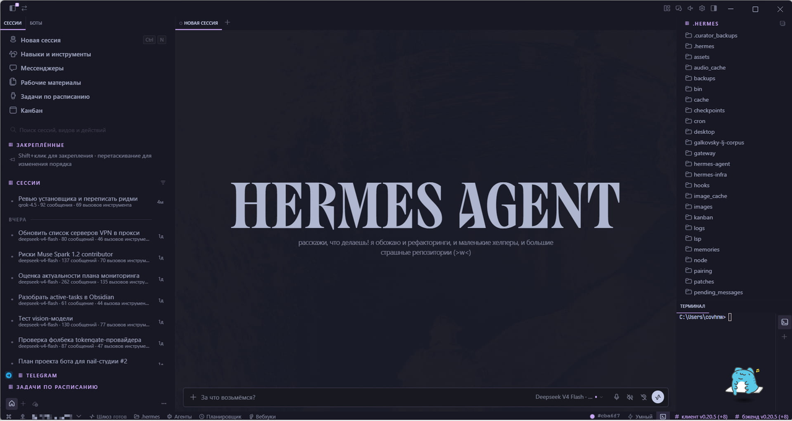
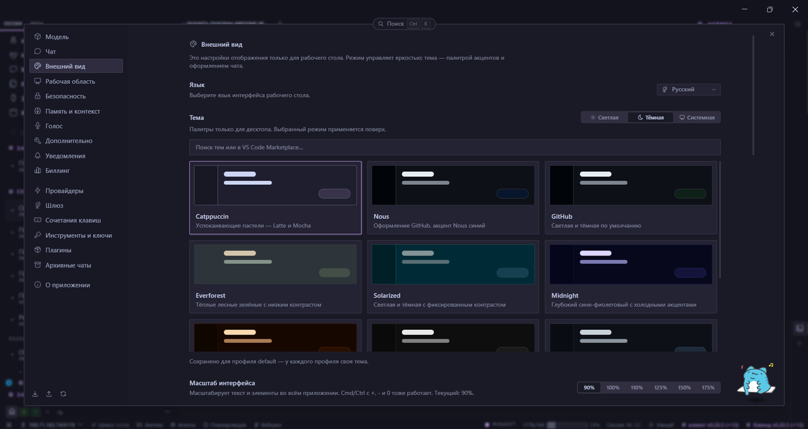
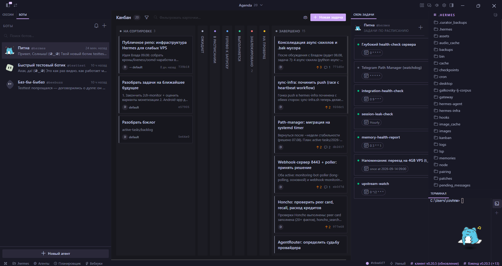

для публичной версии: мод v1.2.3 · Hermes Desktop 0.21.0.
Hermes Desktop — мод для хардкодов поверх официального ru
В Hermes Desktop v0.21+ появился официальный язык Russian (ru) в настройках. Но i18n-каталог покрывает только ~50–60% UI. Остальное — хардкоды в компонентах, плагинах и Electron main-process. Этот мод переводит именно их.
Поставить мод Исходники на GitHub
Что именно переводит этот мод (а официальный ru — нет)
- Боты и канбан — целые поверхности UI, их i18n-ключей в апстриме нет.
- Electron main-process — boot-failure overlay, gateway auth messages, ticket expiry, connection errors.
- Подписи полей настроек (
app/settings/constants.ts) — они не часть i18n-системы. - Плагин-метаданные (hermes-bots, kanban panes).
После hermes update русский UI возвращается одной командой — мод работает через нативный механизм stash/restore апстрима.
Официальный ru (v0.21+) | Этот мод (поверх официального) | |
|---|---|---|
| Каталог i18n (кнопки, настройки, онбординг) | ✅ ~2200 ключей | использует официальный |
| Хардкоды в компонентах (renderer) | ❌ | ✅ |
| Боты, канбан | ❌ | ✅ |
| Electron main-process (boot-failure, gateway auth) | ❌ | ✅ |
| Подписи полей настроек | ❌ | ✅ |
После hermes update | i18n сохраняется | hermes-desktop-ru install — хардкоды восстановятся |
Как выглядит

docs/screenshots/chat.png
docs/screenshots/settings.png
docs/screenshots/bots-kanban.pngУстановка
Нужны Node.js 18+ и Hermes Desktop, собранный из исходников (hermes desktop / git clone, первая сборка 5–10 минут). Portable / prebuilt .exe не поддерживаются. Desktop на время установки закройте.
npm install -g hermes-desktop-ru
hermes-desktop-ru installОбычные пути клона: Windows — %LOCALAPPDATA%\hermes\hermes-agent; Linux — ~/.hermes/hermes-agent. Иначе: hermes-desktop-ru install --root /path/to/hermes-agent.
| Команда | Зачем |
|---|---|
hermes-desktop-ru install | поставить / перепоставить (откатывает tracked-исходники клона к стоку, затем патч + сборка) |
hermes-desktop-ru doctor | сухая проверка, без записи и без убийства процессов |
hermes-desktop-ru uninstall | вернуть packaged app.asar из .stock.bak |
После апдейта апстрима:
hermes update
hermes-desktop-ru installБез npm — zip релиза: install.bat / install.ps1 на Windows, ./install.sh на Linux.
Ограничения — сразу нет
Не патчим portable и готовые установщики. Скачанный с сайта .exe, подписанный .app, AppImage — вне скоупа. Установщик ищет app.asar только в apps/desktop/release/ рядом с клоном.
Windows — основной, автором протестированный путь. Linux — установщик прогнан (Ubuntu 26). macOS — экспериментально.
Другие ваши патчи в том же клоне установщик не бережёт: install сначала делает git restore tracked-файлов.
Баги, исходники и апстрим
Репозиторий, issues и журнал совместимости с апстримом: github.com/upmeister/hermes-desktop-ru. Лицензия MIT. Мод не связан с Nous Research официально.
Предложение по выносу хардкодов в апстрим: #100731 (interest check). Если апстрим вынесет хардкоды в i18n — мод станет не нужен.